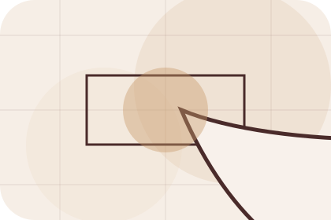
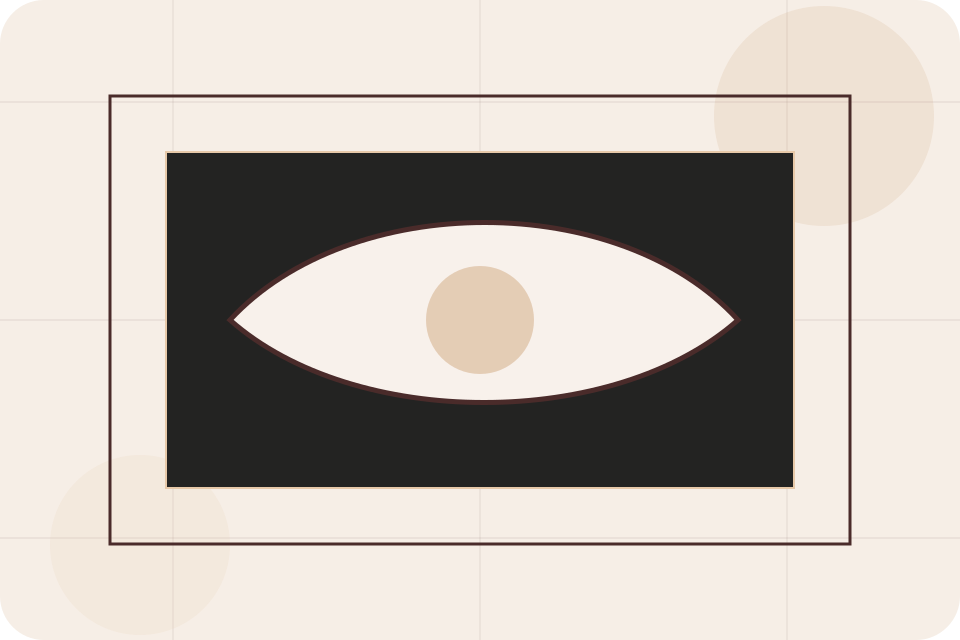
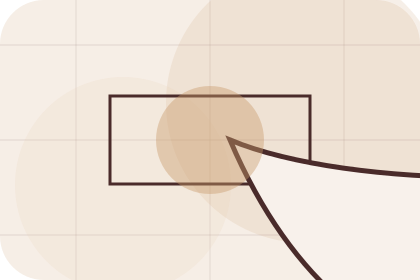
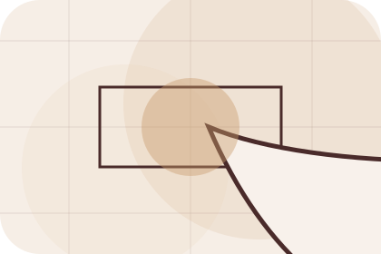
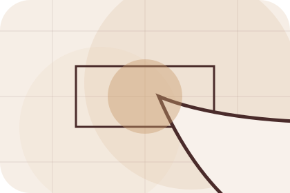
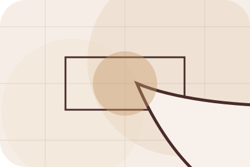
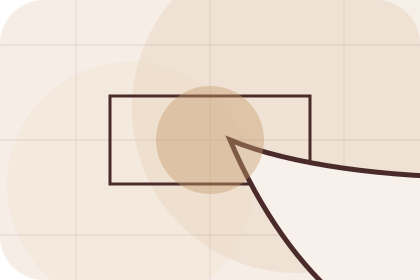
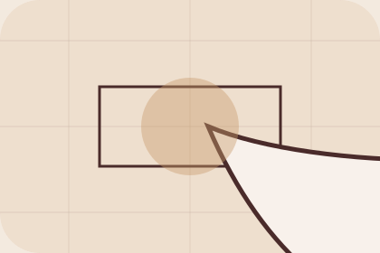

Context
Collections gives the page a specific angle instead of repeating the navigation label.
Shop / 01
Shop opens as a clear interiors decision hub: what Room offers, who it helps, why it matters, and which route to take first.
The first screen combines positioning, proof, primary action, and fast internal navigation, so people can act immediately or compare the rest of the shop route with context.
Editorial room hero
Select the closest route and Room keeps the next step, proof, and follow-up expectation aligned with taste and home confidence.

Shop / 03
Furniture adds commerce context to the shop route, using the luxury material moodboard structure to support taste and home confidence before visitors choose a next step.
Room uses material mood cards and focused copy to make the decision easier to scan, aligning the section with taste and home confidence rather than filling space.
Explore ShopFurniture gives the page a specific angle instead of repeating the navigation label.
The material mood cards show what to compare, what to avoid, and what matters most for interiors, furniture & home design visitors.

The final cue points to a useful internal route so the section keeps the journey moving.
Shop / 04
Decor adds commerce context to the shop route, using the luxury material moodboard structure to support taste and home confidence before visitors choose a next step.
Room uses material mood cards and focused copy to make the decision easier to scan, aligning the section with taste and home confidence rather than filling space.
Explore ShopDecor gives the page a specific angle instead of repeating the navigation label.
The material mood cards show what to compare, what to avoid, and what matters most for interiors, furniture & home design visitors.
The final cue points to a useful internal route so the section keeps the journey moving.
Shop / 05
Lighting adds commerce context to the shop route, using the luxury material moodboard structure to support taste and home confidence before visitors choose a next step.
Room uses material mood cards and focused copy to make the decision easier to scan, aligning the section with taste and home confidence rather than filling space.
Explore ShopLighting gives the page a specific angle instead of repeating the navigation label.
The material mood cards show what to compare, what to avoid, and what matters most for interiors, furniture & home design visitors.
The final cue points to a useful internal route so the section keeps the journey moving.
Shop / 06
Textiles adds commerce context to the shop route, using the luxury material moodboard structure to support taste and home confidence before visitors choose a next step.
Room uses material mood cards and focused copy to make the decision easier to scan, aligning the section with taste and home confidence rather than filling space.
Explore ShopRoom structures textiles around context, judgment, and a clear next route so visitors can compare the block quickly before they start the design.
Start DesignShop / 07
Materials adds commerce context to the shop route, using the luxury material moodboard structure to support taste and home confidence before visitors choose a next step.
Room uses material mood cards and focused copy to make the decision easier to scan, aligning the section with taste and home confidence rather than filling space.
Explore Shop

Materials gives the page a specific angle instead of repeating the navigation label.
Shop / 08
Details adds commerce context to the shop route, using the luxury material moodboard structure to support taste and home confidence before visitors choose a next step.
Room uses material mood cards and focused copy to make the decision easier to scan, aligning the section with taste and home confidence rather than filling space.
Explore ShopDetails gives the page a specific angle instead of repeating the navigation label.

The material mood cards show what to compare, what to avoid, and what matters most for interiors, furniture & home design visitors.

The final cue points to a useful internal route so the section keeps the journey moving.
Shop / 09
Enquiry makes the contact path concrete: what to send, how the response works, and what Room needs before visitors start the design.
The section reduces contact friction by naming the channel, expected detail, privacy path, and response expectation instead of dropping visitors into a generic form.
Start DesignWhat information helps Room respond with a useful answer instead of a generic reply.
How the visitor should think about response, urgency, location, or availability.
The expected next message keeps scope, timing, and the first practical step clear.
Shop / 10
Room closes the shop route with a clear action, a quick reminder of the value, and a low-friction way to start the design.
Visitors who are ready can use the primary action. Visitors who are still comparing can scan the section links, proof, and support routes before they start the design.
Start DesignThe final block keeps the choice simple: act now, compare one more proof route, or send enough detail for a focused response.
Start Designtaste and home confidence
A material-led interiors site with luxe moodboards, serif headlines, room selectors, and sourcing CTAs. Shop ends with a direct path to start the design, plus enough context for visitors who still need to compare.

Start DesignInformation is provided for planning and should be reviewed for the final client, location, and operating rules.